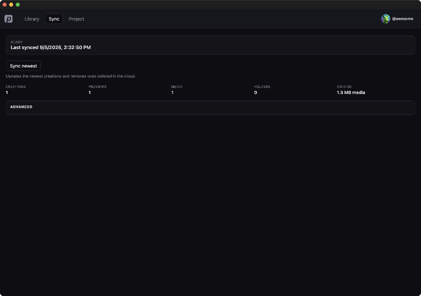

Sync
Sync pulls this account’s cloud creations onto this computer and removes rows that were deleted in the cloud. You do this from the Sync tab — not from Library.

Sync newest
- Click Sync in the top bar.
- Wait until the status says Ready.
- Click Sync newest.
- Watch the counts: Creations, Previews, Media, Folders, and On disk.
Newest is the usual step. It updates recent creations; it does not hammer the full catalog.
Previews, media, and folders
After the catalog is current, extra buttons appear only when work remains:
- Cache N previews — download thumbnails so Library cards show pictures.
- Cache N media — download the full files you will edit or generate from.
- Sync N folder changes — pull cloud folders and push pending local folder edits.
Folder sync is a separate step from Sync newest. A catalog can be current while folders are still empty or still waiting to upload.
Conflicts
If a folder disagrees with the cloud, Sync lists the conflict. Choose This desktop or Cloud for each one, then Apply resolutions and retry.
Advanced
Open Advanced only when newest is not enough:
- Sync full catalog — rebuild the whole catalog. Slow; not the everyday button.
- Sync folders — same folder pass as above, on demand.
- Sync group members — repair grouped creations.
- Repair thumbs — rebuild mismatched previews.
The path under Advanced is this account’s folder on disk. Recent jobs lists what just ran.